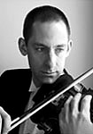

|  |
Violinist David Brickman enjoys a diverse career as soloist, chamber player, and orchestral musician. After spending a season with the Columbus Symphony Orchestra and another as associate concertmaster of the Honolulu Symphony Orchestra, he returned to his native New York in 1989 to join the Rochester Philharmonic Orchestra as its principal second violinist. He is concertmaster of the Rochester Chamber and Skaneateles Festival Orchestras, has toured the United States and Europe with the Pittsburgh Symphony Orchestra and Lorin Maazel and has performed and recorded as acting concertmaster of the Milwaukee Symphony Orchestra.
Mr. Brickman plays for the Rochester Society for Chamber Music, the Seal Bay Festival of American Chamber Music in Vinalhaven, Maine and is a founding member of the Ithaca based Fingerlakes Chamber Ensemble. He is a frequent soloist with the Rochester Philharmonic and Rochester Chamber Orchestras and has appeared with the Albany Symphony and Savannah Symphony Orchestras among others. Mr. Brickman's versatility and wide ranging musical interests are reflected in his recent recordings and studies. He is a featured soloist in a performance of Vernon Duke's jazz standard 'Autumn in New York' on the RPO's 75th Anniversary CD and has recorded several works of 20th century chamber music for the Milken Foundation. Inspired by his close work with composers at the Seal Bay Festival and his interest in improvisation, Mr. Brickman composed the cadenzas for his 1999 performance of Mozart's Violin Concerto #4 in D Major. The Rochester Chamber Orchestra and Mr. Brickman recently gave the world premier of 'Elgar Suite', Mr. Brickman's own arrangement of four short pieces for violin and piano by Edward Elgar. Supplementing performance degrees from the Eastman School of Music and Indiana University School of Music, Mr. Brickman has studied baroque violin with Stanley Richie and traveled to Zurich, Switzerland to perform in master classes with the legendary violinist Nathan Milstein. His major teachers include Lois Lyman, Charles Castleman, Franco Gulli and Joseph Gingold.
|